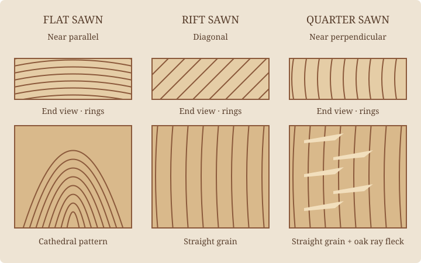

Two boards from one tree can look very different. Turn the cut relative to the growth rings, and a broad cathedral can become a quiet series of straight lines.

Flat sawn: a broad, flowing pattern.
Also called plain sawn, this lumber has growth rings closer to parallel with the broad face. Faces often show cathedral shapes. It makes efficient use of a log and can provide wide boards. Across its width, it generally moves more with humidity than comparable quarter-sawn stock.
Rift sawn: a quieter rhythm.
Rings run diagonally to the face, often near 45 degrees. The face tends to show straight grain. In oak, this orientation usually shows less ray fleck than quarter-sawn material. It can be useful when a design calls for consistent lines, especially across legs and frames.
Quarter sawn: straight grain, visible rays.
Rings meet the broad face at a steep angle, approaching 90 degrees. Grain often reads as straight; in oak, rays can appear as striking flecks across it. Comparable quarter-sawn boards generally change less in width with moisture, though they still move.
Names have fuzzy boundaries.
Suppliers’ angle ranges overlap. A common retail convention is roughly 0–30° for flat sawn, 30–60° for rift sawn, and 60–90° for quarter sawn. Other grading systems use 45° as the division between plain and quarter sawn. Ask to see the actual boards; a label cannot promise a perfectly uniform face.
Why the choice matters to you.
Choose a flowing pattern for a lively tabletop, straight grain for a restrained frame, or ray fleck as a feature. Availability, board width, waste, and species affect cost. A higher price does not make one cut universally better; it should serve the piece.
Every cut still needs room to move.
Wood exchanges moisture with the air. Most dimensional change happens across the fibers, with much less along their length. A solid tabletop therefore needs attachments that allow its width to change. Quarter-sawn stock reduces some movement; it does not make a rigid cross-grain assembly safe.
Further reading: USDA Forest Products Laboratory, Wood Handbook, chapters on wood structure and moisture.